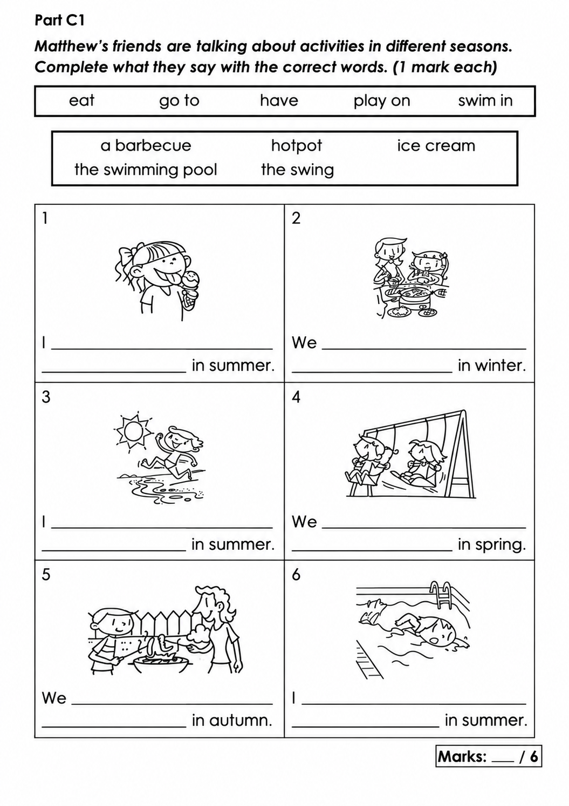
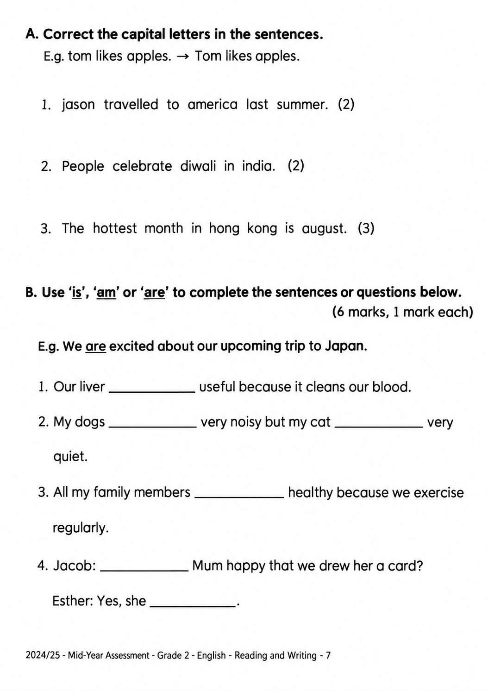
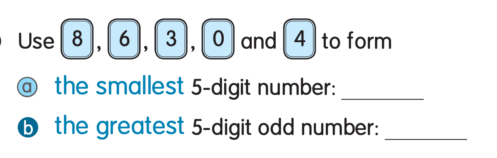
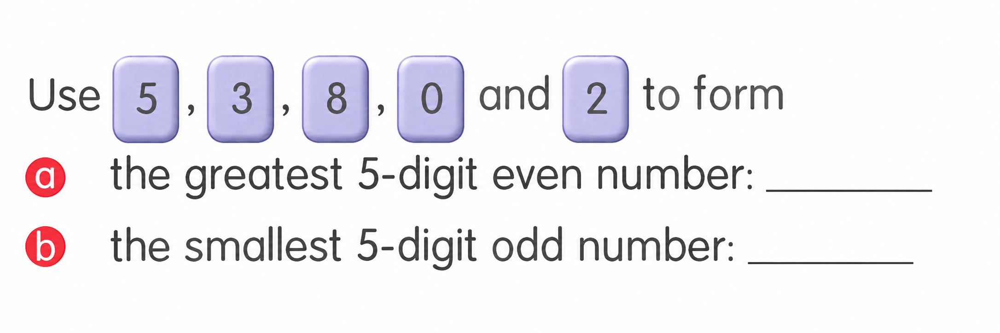

已掌握
| # | 中文意思 | 例句/提示 | 英文默写 | 已掌握 |
|---|---|---|---|---|
| noun 名词 | ||||
| 1 | 生日 | My is in May. | ||
| 2 | 游戏房 | The children are in the . | ||
| 3 | 健身房 | We exercise in the . | ||
| 4 | 野餐 | We have a in the park. | ||
| 5 | 大厅 | We meet in the school . | ||
| 6 | 银行 | My mum goes to the . | ||
| 7 | 周四 | We have art on . | ||
| 8 | 小学生 | The reads a book. | ||
| 9 | 早餐 | I eat at seven. | ||
| verb 动词 | ||||
| 10 | 抓住 | Try to the ball. | ||
| 11 | 收拾、收纳 | Please your toys. | ||
| 12 | 洗澡 | I before bed. | ||
| 13 | 醒来 | I at seven every morning. | ||
| 14 | 选择 | I a book. | ||
| adjective 形容词 | ||||
| 15 | 著名的 | This is a place. | ||
| 16 | 粗鲁的 | Do not be . | ||
| 17 | 聪明的 | She is and kind. | ||
| 18 | 特别喜欢的 | My sport is basketball. | ||
| uncategorized 未分类 | ||||
| 19 | 理解 | I the question. | ||
| 20 | 铁路 | The connects the two towns. | ||
| # | 单词/词组 | 中文意思 | 例句/说明 | 已掌握 |
|---|---|---|---|---|
| adjective 形容词 | ||||
| 1 | correct | This answer is correct. | ||
| 2 | funny | Sam is funny. He tells jokes. | ||
| 3 | rich | Now Billy was rich. | ||
| noun 名词 | ||||
| 4 | punctuation | Remember to use correct punctuation. | ||
| 5 | belt | He wears a black belt. | ||
| 6 | sausage | I eat a sausage for breakfast. | ||
| 7 | character | The story has many characters. | ||
| 8 | washing | The washing is dry now. | ||
| 9 | kilogram | The bag weighs one kilogram. | ||
| 10 | moral | The story has a moral. | ||
| 11 | shape | A circle is a shape. | ||
| 12 | picnic | We have a picnic in the park. | ||
| noun phrase 名词短语 | ||||
| 13 | a packet of potato chips | He eats a packet of potato chips. | ||
| 14 | theme park | She went to a theme park. | ||
| 15 | a card | My brother gave me a card. | ||
| 16 | a purse | I gave her a purse. | ||
| 17 | General Studies | Some pupils like General Studies. | ||
| verb 动词 | ||||
| 18 | fry | Fry the bread on both sides. | ||
| phrase 短语 | ||||
| 19 | step on | Be careful not to step on the flowers. | ||
| verb phrase 动词短语 | ||||
| 20 | play mini golf | I like to play mini golf at the weekend. | ||
| 21 | feed animals | We can feed animals on the farm. | ||
| 22 | playing with dolls | My sister likes playing with dolls. | ||
| 23 | making models | Hiro likes making models of robots. | ||
| uncategorized 未分类 | ||||
| 24 | paragraph | Read the first paragraph of the story. | ||
| 25 | mid-year | Our mid-year test is in January. | ||
| 26 | remember | Please remember to bring your book. | ||
| 27 | thief | The thief stole a bike. | ||
| 28 | royal | The king lives in a royal palace. | ||
| 29 | campsite | We put up our tent at the campsite. | ||
| interjection 感叹词 | ||||
| 30 | bingo | Bingo! You got the right answer. | ||
| # | 中文意思 | 例句/提示 | 英文默写 | 已掌握 |
|---|---|---|---|---|
| time/date 时间日期 | ||||
| 1 | 七月 | is the seventh month. | ||
| 2 | 星期日 | is a weekend day. | ||
| directions 方向 | ||||
| 3 | 南 | is a direction. | ||
| numbers 数字 | ||||
| 4 | 4 | is 4. | ||
| 5 | 6 | is 6. | ||
| 6 | 9 | is 9. | ||
| 7 | 13 | is 13. | ||
| 8 | 20 | is 20. | ||
| 9 | 30 | is 30. | ||
| ordinal numbers 序数 | ||||
| 10 | 第一 | This is the shape. | ||
| solid shape 立体图形 | ||||
| 11 | 五棱柱 | A has pentagonal faces. | ||
| 12 | 圆柱 | A has two circular faces. | ||
| 13 | 侧面 | A is on the side. | ||
| plane shape 平面图形 | ||||
| 14 | 三角形 | A has three sides. | ||
| 15 | 五边形 | A has five sides. | ||
| # | 单词/词组 | 中文意思 | 例句/说明 | 已掌握 |
|---|---|---|---|---|
| geometry 几何 | ||||
| 1 | angle | An angle is formed by two rays with the same endpoint. | ||
| 2 | right angle | A right angle is 90 degrees. | ||
| 3 | perpendicular | Perpendicular lines meet at a right angle. | ||
| 4 | perpendicular line | Perpendicular lines meet at a right angle. | ||
| 5 | acute angle | An acute angle is smaller than a right angle. | ||
| 6 | grid | A grid helps us find positions. | ||
| 7 | curve | Draw a curve. | ||
| question word 题目词 | ||||
| 8 | match | Match the number to the word. | ||
| answer 答案 | ||||
| 9 | correct | Choose the correct answer. | ||
| comparison 比较 | ||||
| 10 | less | 8 is less than 10. | ||
| 11 | more | 8 is more than 5. | ||
| 12 | least | Which number is the least? | ||
| 13 | lighter | A pencil is lighter than a brick. | ||
| time/date 时间日期 | ||||
| 14 | minute hand | At three o'clock, the minute hand points to 12. | ||
| 15 | small division | The minute hand moves one small division in one minute. | ||
| 16 | midnight | Midnight is twelve o'clock at night. | ||
| quantity 数量 | ||||
| 17 | pair | A pair means two things together. | ||
| operations calculation 运算 | ||||
| 18 | difference | The difference is the answer in subtraction. | ||
| 19 | multiplication | Multiplication can use times. | ||
| 20 | equally | Share the apples equally. | ||
| 21 | remainder | The remainder is left after division. | ||
| teacher math vocabulary 老师数学词汇 | ||||
| 22 | stop | Stop counting when you reach twenty. | ||
| measurement 测量 | ||||
| 23 | fill | Fill the jug with water. | ||
| 24 | centimetre | A centimetre is a small unit of length. | ||
| 25 | kilometer | One kilometer is 1,000 meters. | ||
| geometry tool 几何工具 | ||||
| 26 | geo-strip | A geo-strip can help make shapes. | ||
| 句型结构 | ||||
| 27 | ... is to the east of ... | The school is to the east of the park. | ||
| 28 | ... is to the south of ... | The library is to the south of the shop. | ||
| plane shape 平面图形 | ||||
| 29 | upper base | The upper base of this trapezium is 4 cm long. | ||
| 30 | right-angled trapezium | A right-angled trapezium has two right angles. | ||



